← 返回阅读库 · 原论文目录
论文讲解阅读文档 · 表征学习 · v169
Location-Aware Self-Supervised Transformers for Semantic Seg.[2212.02400]
视频时长 00:12:02；讲解文字 5,927 字符；提取讲解画面 23 张。按视频原顺序阅读，每段文字保留时间戳。
文字来自整段视频的自动语音转写，按自然停顿分段，并与 PPT / 论文页面 / 演示画面对齐。未将讲解压缩为摘要；术语、数字和口述公式请结合画面及原论文核对。 阅读稿已校正规范部分明确术语误识别；原始逐字稿和每处修改记录另行保留。
讲解画面为源视频截图（640×360），不是可编辑 PPT 文件。全片按每秒 2 帧扫描内容变化，逐步展开页保留；连续动画保留代表画面。清晰度受源视频限制。
下载完整资料包 · 含离线 HTML、PDF、Word、全部 PPT 画面和字幕。
原论文与材料
Location-Aware Self-Supervised Transformers for Semantic Segmentation · 下载完整 PDF（16 页）
按时间阅读
00:00:00–00:00:27 · 画面 001
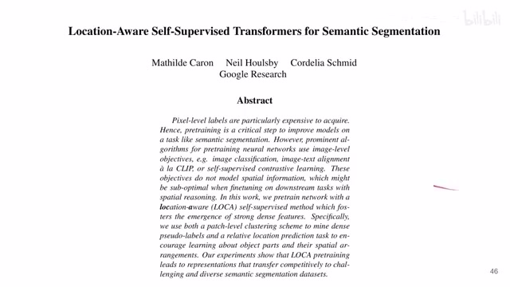
00:00:00–00:00:27 · 画面 001大家好啊 ，今天我们来快速数一篇论文 Location-Aware Self-Supervised Transformers for Semantic Segmentation。那这篇论文的一作呢 ，是我们之前介绍过的这个 SWAV 、Dino 这些有名的这些方法的一作。但那个时候呢 ，这个作者还在这个 Facebook，现在呢 ，已经跑到 Google 去了。那当然你随着阅读本文 ，你会发现非常多的熟悉的感觉。这个技术路线呢 ，都是一脉相承的。我们首先来看
00:00:27–00:02:27 · 画面 002
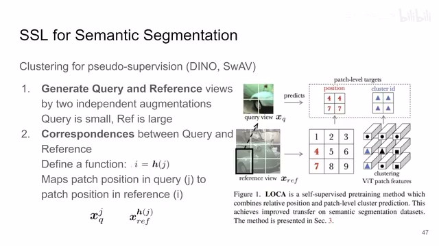
00:00:27–00:02:27 · 画面 002那本文呢，主要是针对这个 segmentation 来做的这个 self-supervised learning。那使用的方法呢，跟之前这些方法也是一样，都是基于 clustering。那现在呢，我们既然是要做这个 segmentation这就希望对我们图像的每一个部分有更精细的这个划分，不能说是再像以前一样对一整张图像提一个好的 representation 就结束了。所以呢，在本文中呢，大部分的操作都是这个 patch level 的，也就是说，我们精细到每一个 patch 的 representation，而不是说一整张图像的一个 representation。那么这个呢，是相对于之前这些方法的最主要的一个区别。那么下面我们来直接来看
那么跟很多这个 pairwise 或者叫 contrastive learning 的方法一样对吧，还是我们还是同样一张图像，我们首先要切除两个 view 出来。那么这里呢，作者用的是这个 query 和这个 reference。那么这两个 view 呢，是通过两个相互独立的 augmentation 的这些方法来采出来了。同时呢，我们希望这个 query 这个 view 呢，它的面积覆盖的原图的面积呢，相对较小，reference 这个 view 呢，它覆盖的原图面积相对较大
你看是这样子很明显的一个对比那么然后呢我们说了既然是这个 patch level 的我们就给它分 patch 吧对吧那一通操作下来我们希望每个 patch 的这个尺寸是相同的对于这个 query 来说对吧因为它整个的面积就比较小所以它分的里面的 patch 的数量呢就相对少那对于这个 reference 来说呢它的这个 patch 的数量呢就大同时呢因为我们对吧都是从一张图像里面采出来的这个 query 和这个 reference 怎么采也是我们自己知道的。所以呢，我们这里可以构建一个这个 function 这个叫 h 呢，它呢能够使我们在这个 query 中的这个 patch 的 index 这个比如说这个 index 映射到我们在这个 reference 图像中的这个 index 这个 i。那这个映射呢，其实就是说这两个 patch 对应到原图它各自有一个自己的区域嘛
00:02:27–00:03:19 · 画面 003
00:02:27–00:03:19 · 画面 003那么这两个区域有交叠的最大的部分，那么这一对就联系起来了。那最简单右边这个例子来说对吧，你这个 reference view 给它分成了 9 个 patch 对吧，每个 patch 都这样。然后你看你的 query view 这 4 个 patch 里面上面这两个 patch 距离这个 reference view 里面的这个 4 号这个 patch 它是最近的。所以它经过这个 h function 之后对吧，上面这两个 patch 就对应到这个 4 号这个位置那下面这两个 patch 对吧，它对应的是这里啊，跟这个 7 号这个 patch 是最近的。所以呢，你如果套上 h 之后这个 i 解出来呢，就是 7 啊。这是一个方式，这个是我们因为我们 augmentation 也是我们已知的嘛对吧，所以呢，这个我们是知道的
那么这样呢，我们有这个 query 和 reference 里面每一个 patch 它的对应的关系。那么然后呢，我们就开始做正常的这个流程了对吧，做 self-supervised learning 的流程，把我们的每个 patch 都送到这个 encoder 里面对吧。既然都是 patch 了，那肯定是用 vit 来做的。那么 vit 做出来之后，你 query 走 query 那条路线，你的 reference 走 reference 那条路线
00:03:19–00:05:19 · 画面 004
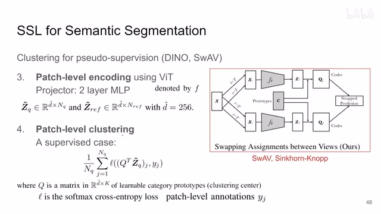
00:03:19–00:05:19 · 画面 004然后有一个两层 MLP 的 projector 对吧？提出一个 representation 来这里，就是 zQueryTelta 和 zReferenceTelta。这个地方的方法就跟 SWAV就一样一样的了对吧？你可以看到也是对吧？两个这个 branch，你这里把它替换成一个 query 的这个 branch，你这里把它替换成一个 reference 的 branch 对吧？提出来 representation 之后啊，然后呢投影，然后呢你用这个 Sinkhorn 方法解一个这个 ot，就是 optimal transportation 最优输送问题
这里你把它理解成一个聚类的方法，就把我们的 query 还有 reference 给它们映射到不同的 clustering center。这些聚类中心这里作者有个专有的名词叫做 prototypes，你可以把它理解成他们把每一个类给它支援起来了，只不过注意本文的标记，这里 q 是作为 prototype他的这个名字，而在这个 SWAV 里面 C 是这个 prototype 的名字，然后他用这个 Q 表示这个跟 prototype 搞出来的这个投影啊那么这个标记的区别稍微注意一下。那本质上你就把它理解成我所有的 patch 都聚类对吧？然后呢有一些聚类的中心，我们就能够把每个 patch 跟他的自己的聚类中心联系起来了。那如果这篇文章你还不熟悉呢，可以去看我们之前的视频啊。那么这个时候呢，我们假设如果这是一个有监督的情况下，那这个事情其实非常好解决对吧？我每一个 patch 我都有自己的 label 这个 y
那么我提出来这个 representation 跟我们的这个 clustering center 搞出来的这么一个向量做完 softmax，然后跟实际的这个类做 cross entropy 对吧？这个 loss 就是一个监督的这个形式。所谓 segmentation 就是把每一个 patch 分成不同的类嘛对吧？那么这个是有监督的情况，而现在呢对吧？我们既然是 self-supervised learning 是没有监督的，那我们就要想办法把这个监督信号这个 y 搞出来。那怎么搞呢？也非常直接，就是我们通过聚类来产生这个 pseudo-label
00:05:19–00:05:34 · 画面 005
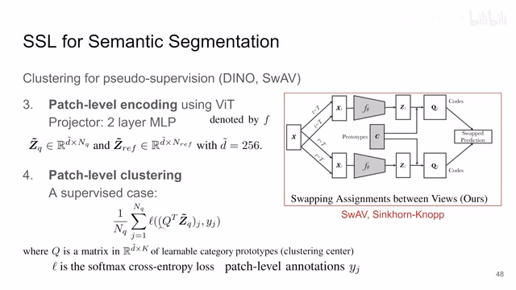
00:05:19–00:05:34 · 画面 00500:05:34–00:07:34 · 画面 006
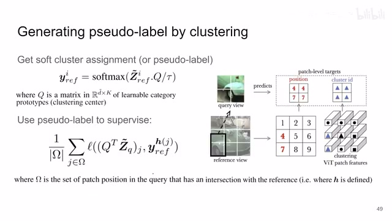
00:05:34–00:07:34 · 画面 006那这个聚类呢发生在这个 reference view。那道理也很简单，你的 prototype 在这里对吧？你把 reference view 里面所有每一个 patch 的 representation 啊给它搞出来，然后这个 temperature 一加做一下这个 softmax。那这样子呢你就给每一个 reference view 里面的 patch 都分了一个这个类啊。这个类具体是什么不重要，因为你也不知道，但是重要的是呢每个 patch 都有一个 pseudo-label
那现在呢你用 reference view 它的这个 label，你刚刚通过聚类得到的去监督我们的这个 query view 它的这个结果。那这样子这个监督信号就建立了，你就可以训练这个网络了。那注意呢这里有这个 index，这里就意味着你的 query view 里面的每一个 patch 它要对应到你这个 reference view 的这个 patch 它的这个类别也就是说这两个 patch 我们知道它对应的是这个 4 号这个 patch。所以呢这两个 patch 上面这两个 patch 它的类别要跟这个 patch 它的类别是一样的，或者说观众表达来说，本质上它就是要求这两个 patch 的 representation 和这个 patch 的 representation 它们是相近的。那这两个 patch 的 representation 下面这两个对应的是 7 嘛，要跟这个 patch 的 representation 是相近的对吧？它本质上就在说这么一个事情
只不过呢，这里作者沿用之前的技术路线，用 clustering 的方法来避免这个 model collapse。所以它有这个 prototype、Sinkhorn 这些看起来很 fancy 的东西，但是到最后来说，最核心的思想还是在 patch 这个层面上。我两个 patch 的 representation 只要它对应的原图的同一块位置，那么这两个 patch 的 representation 应该是相互接近的，那就是这么直白的一个道理啊。直播原来是这个 instance level，就是整个图像层次的，现在放到这个 patch level。那当然呢，这里这个 omega 代表了就是你的 reference view 里面的一个 patch 所对应的所有的 query view 里面的 patch。那么这个呢是本文最主要的，你可以叫它 contrastive 或者叫 pairwise 的这个 loss。那么在此之外呢，作者还提出了，说我通过另一个辅助的任务
00:07:34–00:07:38 · 画面 007
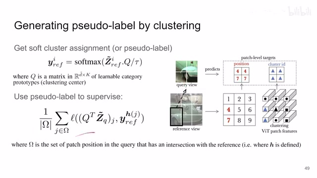
00:07:34–00:07:38 · 画面 00700:07:38–00:09:23 · 画面 008
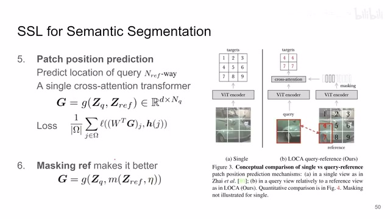
00:07:38–00:09:23 · 画面 008来帮助我们进行训练。那这个辅助任务呢就是 patch position prediction。就是我拿到我当前的 query 的这个 patch，我拿到我的这个 reference 的这个 patch，我来预测我这个 query 的 patch 它属于哪一个 reference patch。你想这也是一个很直观的任务吗？对吧，只要两个 patch 的这个 representation 足够近，对吧，这对于一个 classifier 来讲是一个相对容易的事情。那么这里呢，作者用了一个一层的这个 cross attention 的 transformercross attention 对吧，就是 query 来自这个 query patch 它的这个 value 还有 key 呢
来自这个 reference patch。然后一个 transformer 出来一个 linear layer 对吧，但是没有 bias 的 linear layer。它预测出来的结果就是你之前的那个 h 方式对吧，它能对应的把我们这个 query 里面的坐标查到这个 reference 里面的坐标对吧，你本质上就是预测 reference 里面的坐标对吧。那这个是另一个 loss 来帮助我们更好的训练这个模型。所以你看这个文章里面本质上就有两个 loss，一个是 similarity，那第二个呢
就是这个 prediction loss，是两种常见的 self-supervised learning 的这个 loss 的结合。那么当然了，此外作者还发现，说我直接把所有的 patch 都给我们的这个 transformer 来看那这个 position prediction 的 task 呢是相对非常容易的。那为了给它上点难度对吧，我们把我们 reference 的这个 patch 给它 mask 掉一部分，或者换句话说呢，就是按照这个 eta 这个 ratio 对吧，给它 drop 一部分，就扔掉一部分这个 reference 里面的 token。那这样呢就相当于给这个预测上点难度啊。作者发现这样子呢，对我们这个模型的性能呢有一定的提升。
那整个这个过程呢，在右边这个图示的演示呢也是非常的清楚。那么这边呢，一个例子对吧，这个最左边的一列呢是 queryquery 的这个图像长什么样子。然后呢，蓝色的框呢是这个 query 在原图中啊长什么样子。那红色的部分呢是我们刚刚预测的这个 query 对应的这个 reference
00:09:23–00:09:24 · 画面 009
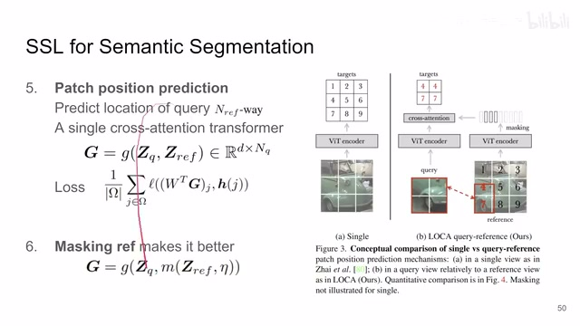
00:09:23–00:09:24 · 画面 00900:09:24–00:09:28 · 画面 010
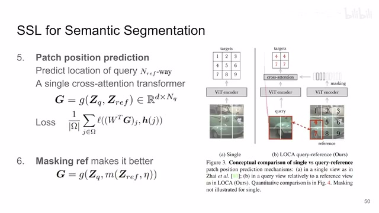
00:09:24–00:09:28 · 画面 01000:09:28–00:09:29 · 画面 011
00:09:28–00:09:29 · 画面 01100:09:29–00:09:40 · 画面 012
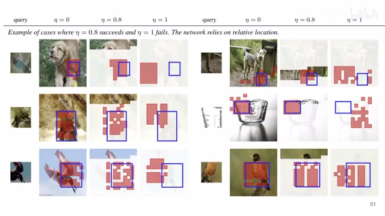
00:09:29–00:09:40 · 画面 01200:09:40–00:09:41 · 画面 013
00:09:40–00:09:41 · 画面 01300:09:41–00:10:14 · 画面 014
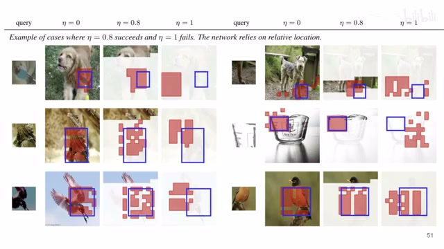
00:09:41–00:10:14 · 画面 014的位置你可以看到这边呢通过不断的增加这个 dropout 的这个 ratio 透明度低的地方就是这些 token 都被 mask 掉了我就是不给我们最后这个 classifier 不给那个 transformer 来看了你可以看到最后全 mask 掉之后呢对吧就找不到了这是一个符合预期的这么一个表现不然他也不是预测了他自己就记录在哪了只是这是我们不希望看到好的，那么以上就是本文主要的技术细节了。下面我们来看到作者汇报的一些结果。这里很多个 Segmentation 的这个数据集真的是非常多。然后之前对比了这个前面的一些经典的这些方法，大部分我们都介绍过了，MAE 这个没介绍，但是你也明白。那感兴趣的朋友呢，你可以到原文里面查看它具体的实验配置。
00:10:14–00:10:33 · 画面 015
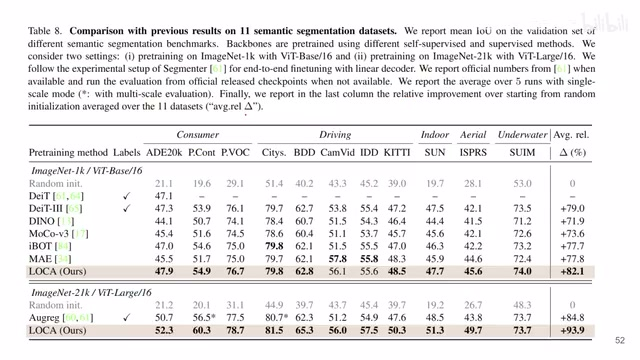
00:10:14–00:10:33 · 画面 01500:10:33–00:10:57 · 画面 016
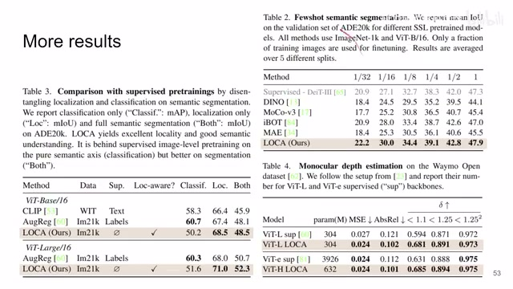
00:10:33–00:10:57 · 画面 016那这里呢是做 Few-shot，也就是 fine-tune 的时候把数据减少了，比如说三十二分之一、十六分之一这样子。那出来的结果。那这里呢是单目的深度估计，是另一个任务了，在 Waymo 就数据集上做的，那效果也是可以的。那这里呢是对比的一些其他的 supervised 做 pretraining 的这个方法，这里有不同的任务，可以看到一些数字。
那么最后呢一些 ablation，比如说你在预测这个 patch 的位置的时候，你为什么不直接把这一整张图塞到这个 vit 里面，然后直接预测每个 patch 的位置，而是一定要用这个 query 和这个 reference 这种形式呢？对吧。这里呢做着一些曲线展示了为什么要这样做。整体上是整体上一个结论呢，就是 mask 要有，但是不能太多。
00:10:57–00:11:02 · 画面 017
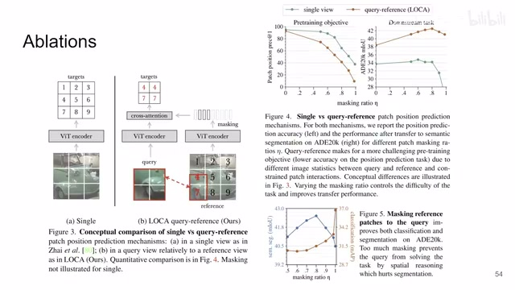
00:10:57–00:11:02 · 画面 01700:11:02–00:11:03 · 画面 018
00:11:02–00:11:03 · 画面 01800:11:03–00:11:18 · 画面 019
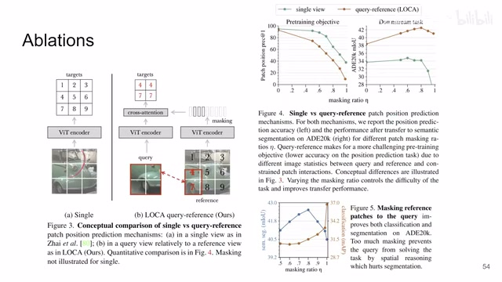
00:11:03–00:11:18 · 画面 01900:11:18–00:11:19 · 画面 020
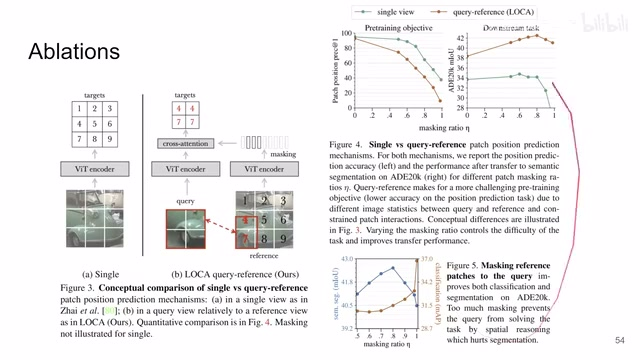
00:11:18–00:11:19 · 画面 02000:11:19–00:11:22 · 画面 021
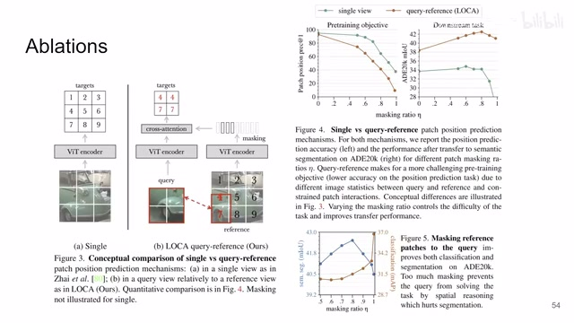
00:11:19–00:11:22 · 画面 021那后面这里呢还有其他的 ablation，包括具体的设计的选择，比如说这里为什么要用 Sinkhorn，然后这个 prototype 有多少个等等等等。这些呢，感兴趣的朋友呢，非常推荐你到原文查看。那么总的来说呢，本文跟之前的这个 SwAV、DINO 这些东西是一脉相承下来的，都是 clustering，都是用 clustering 的方法做这个 self-supervised learning。
00:11:22–00:12:01 · 画面 022
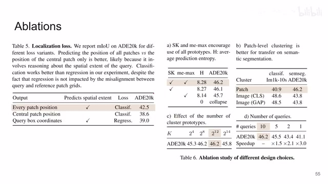
00:11:22–00:12:01 · 画面 022来根据两个 branch 的相似程度构建这个监督信号，只不过这次呢从这个 instance level 下放到这个 patch level，专门针对 segmentation 的任务做了优化。那么以上就是我对这篇论文的一个快速的整理。那么感谢您的收看，再见。
00:12:01–00:12:02 · 画面 023
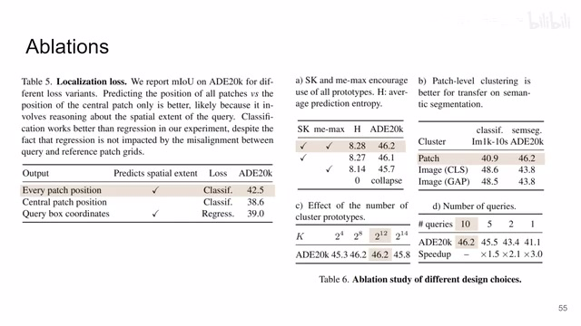
00:12:01–00:12:02 · 画面 023转写与来源说明 · 0 个自动复核提示
保留 32 个原始语音片段，0 个片段触发自动复核提示。提示仅用于定位可能的术语、重复或识别问题，不等于已确认错误。
讲解画面为源视频截图（640×360），不是可编辑 PPT 文件。全片按每秒 2 帧扫描内容变化，逐步展开页保留；连续动画保留代表画面。清晰度受源视频限制。
原视频：paper/合集_2026-10-16_表征学习/[论文简析]Location-Aware Self-Supervised Transformers for Semantic Seg.[2212.02400].mp4
SHA-256：b7655d405e530e93722d8f12b799b87cb7cef9ed8f3f5c4397619aa531174f6c
全文按视频语音与画面制作。原论文可从上方链接下载；完整资料包保留全文、原始逐字稿、字幕和校对记录。